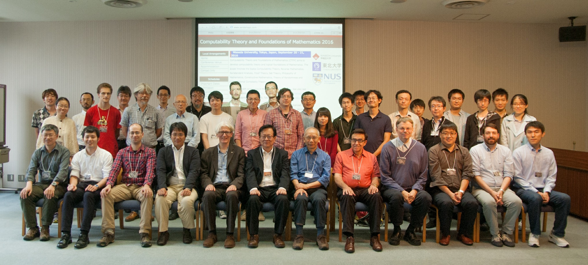

Waseda University, Tokyo, Japan, September 20 - 21, 2016

Computability Theory and Foundations of Mathematics (CTFM) aims to develop computability theory and logical foundations of Mathematics. The scope involves the topics Computability Theory, Reverse Mathematics, Nonstandard Analysis, Proof Theory, Set Theory, Philosophy of Mathematics, Constructive Mathematics, Theory of Randomness and Computational Complexity Theory.
This is the sixth conference in the CTFM conference series. See also last year's conference Computability Theory and Foundations of Mathematics 2015 (September 7 - 11, 2015, Tokyo, Japan). Contact information.
This conference is supported by the Waseda Institute for Advanced Study and JSPS KAKENHI Grant Numbers JP26540001, JP15H03634, JP15K17587 and JP16H07289.
Participants are also invited to attend the Workshop on Mathematical Logic at the Tokyo Institute of Technology on September 23, which includes a CTFM companion lecture by Stephen G. Simpson.
News
- [09/29/2016] Slides of all talks are available.
- [09/19/2016] Conference venue extra information.
- [09/14/2016] Program and abstracts are available.
- [09/05/2016] Tentative program is available.
- [09/05/2016] Recommended hotel.
- [09/05/2016] Workshop on Mathematical Logic, at the Tokyo Institute of Technology, information is available.
- [08/17/2016] Banquet information is updated.
- [08/17/2016] Registration page is updated.
- [07/01/2016] CTFM2016 website is online.
- [06/28/2016] CTFM2016 website is under construction.
Invited Speakers
- David Belanger (National University of Singapore)
- Chi Tat Chong (National University of Singapore)
- Daisuke Ikegami (Tokyo Denki University)
- Wei Li (National University of Singapore)
- Kenshi Miyabe (Meiji University)
- Paul Shafer (Ghent University)
- Frank Stephan (National University of Singapore)
- Philip Welch (University of Bristol)
- Guohua Wu (Nanyang Technological University)
- Yang Yue (National University of Singapore)
Organising Committee
- Makoto Fujiwara (Waseda University, co-chair)
- Florian Pelupessy (Tohoku University)
- Kazuyuki Tanaka (Tohoku University, co-chair)
- Toshimichi Usuba (Waseda University)
- Keita Yokoyama (JAIST)